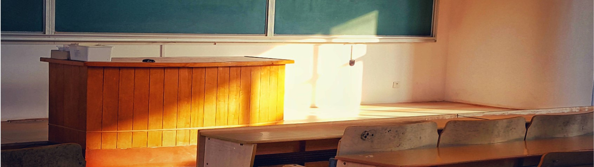
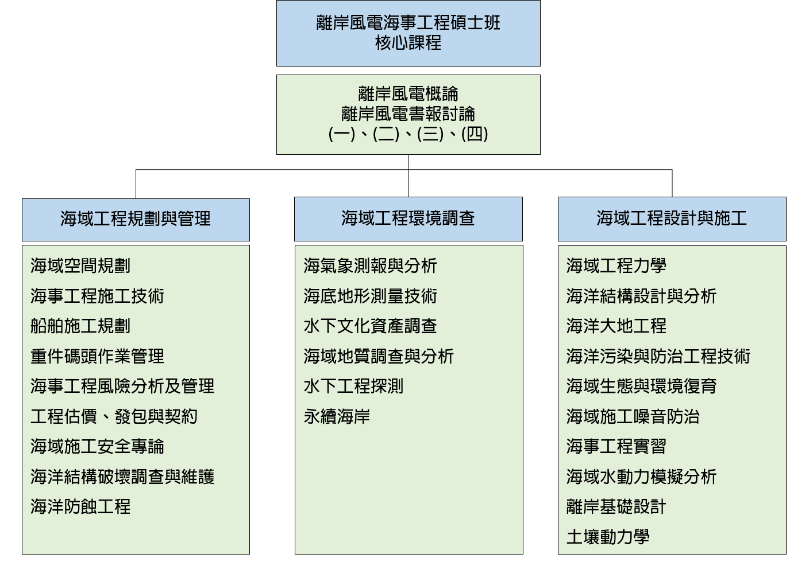

課 程 規 劃
本碩士班課程將涵蓋離岸風電海事工程所涉及的專業以及跨領域知識，核心程程規劃有兩門課程，一為「離岸風電技術」，主要是讓學生能學習基礎的離岸風電相關知識，二為「海洋環境書報討論」，這門課程為書報討論，定期邀請國內外相關專家、學者演講，並於期末要求學生進行分組專題報告。
在核心課程之外，本碩士班的課程規畫除了涵蓋工程技術面向之外，也納入規畫管理與環境調查兩大面向。如此的課程規劃期望訓練出來的學生既能解決海事工程上的技術問題，又具備組織、行政和規劃等管理能力，以期能夠應付跨領域且複雜的離岸風電海事工程專案。三大面向條列如下，而課程地圖則如下圖所示。
一、海域工程規劃與管理：該面向的課程是從規畫與管理的角度，教導學生海域工程所涉及的相關知識。規劃的課程有：海域空間規劃管理、營建專案管理、施工技術與管理、施工船舶規劃、重件碼頭作業管理、海事工程風險分析及管理、工程契約與發包以及海域施工安全專論等課程。
二、海域工程環境調查：該面向的課程是針對海洋資源開發所需的各項海洋環境調查所設計。規劃的課程有：海氣象測報與分析、海底地形量測技術、水下文化資產調查、海域地質調查與分析以及水下工程探測等課程。
三、海域工程設計與施工：該面向的課程是以教導學生海事工程設計與施工為主，並輔以環境與生態相關知識，訓練學生成為一位海洋永續發展的工程師。規劃的課程有：海域工程力學、海洋結構設計與分析、海洋大地工程、海洋污染與防治工程技術、海域生態與環境復育、海域施工噪音防治、海事工程實習以及海域水動力模擬分析、離岸基礎設計及土壤動力學等課程。
